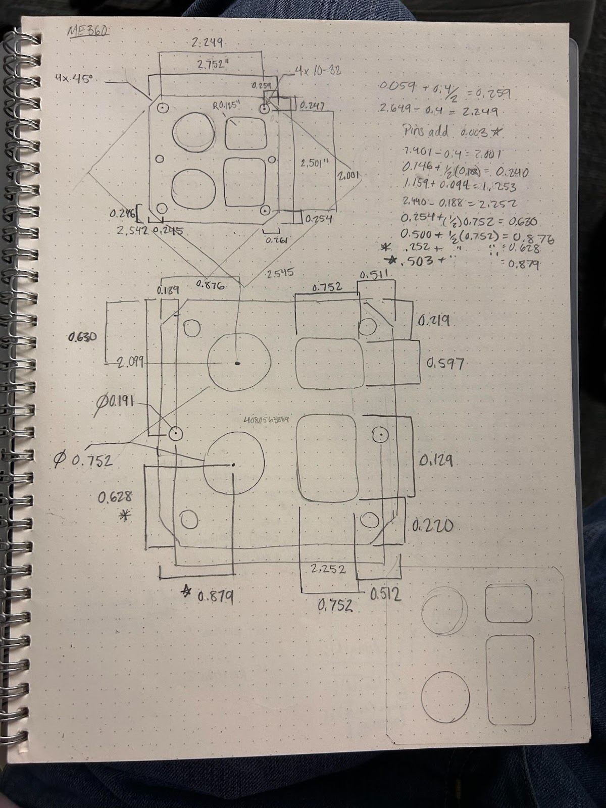
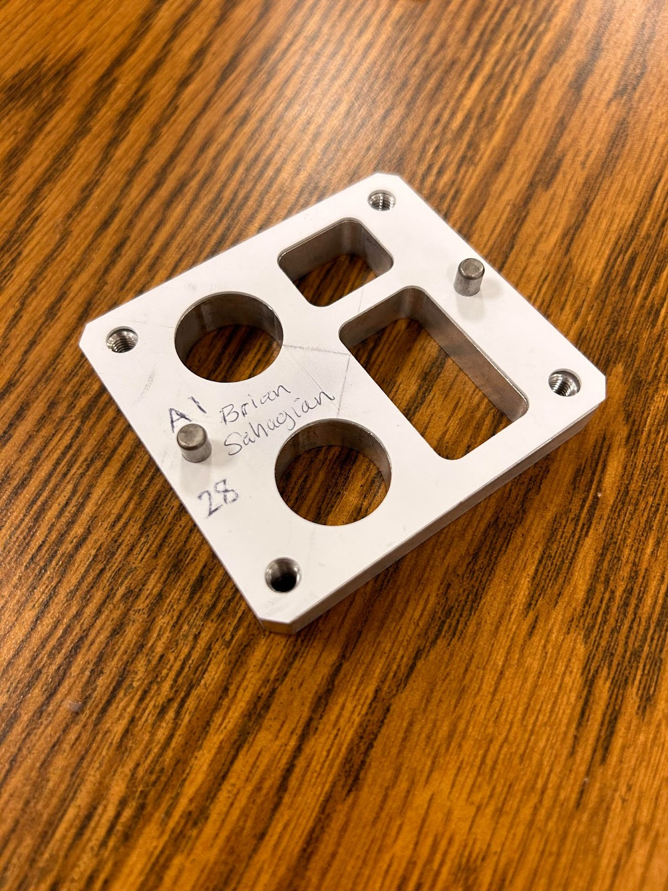

Project Documentation Gallery



Complete reverse engineering workflow from physical measurement to CNC manufacturing
This precision manufacturing project demonstrates the complete reverse engineering workflow from physical measurement to CNC manufacturing. Starting with an existing gasket component, I performed detailed measurements, created accurate CAD models, developed optimal manufacturing strategies, and executed precision CNC machining to recreate the part with improved tolerances.
The project showcases proficiency in metrology, CAD modeling, CAM programming, and CNC machining while emphasizing quality control and manufacturing process optimization. This end-to-end workflow represents real-world engineering practice where reverse engineering and precision manufacturing are essential skills.
Comprehensive dimensional analysis using precision calipers and coordinate measuring machine (CMM) to capture all critical dimensions and geometric features.
Created accurate 3D model in SolidWorks incorporating all measured dimensions, geometric tolerances, and design constraints for optimal manufacturability.
Developed comprehensive CAM programming using HSMWorks, optimizing tool paths for efficiency while maintaining surface finish and dimensional accuracy requirements.
Implemented rigorous quality control procedures including dimensional inspection and fit testing to ensure manufactured part meets or exceeds original specifications.
The reverse engineering process began with comprehensive measurement of the original gasket using precision instruments. Critical dimensions were captured including:
Using the measured data, I created a parametric SolidWorks model that accurately represents the gasket geometry:
HSMWorks was used to generate optimized toolpaths for CNC machining:
The CNC machining process was executed with focus on precision and quality:
Successfully achieved all dimensional tolerances within ±0.002" specification, demonstrating mastery of precision manufacturing techniques and quality control procedures.
Developed efficient reverse engineering workflow that can be applied to future projects, showcasing systematic approach to engineering problem-solving.
Successfully integrated metrology, CAD modeling, CAM programming, and CNC machining into cohesive manufacturing process demonstrating end-to-end engineering capabilities.
Implemented comprehensive quality control procedures ensuring manufactured part meets or exceeds original specifications with improved documentation and traceability.